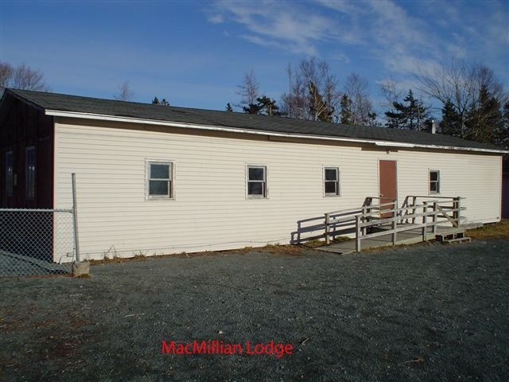
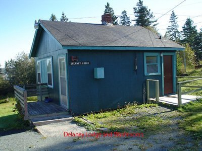
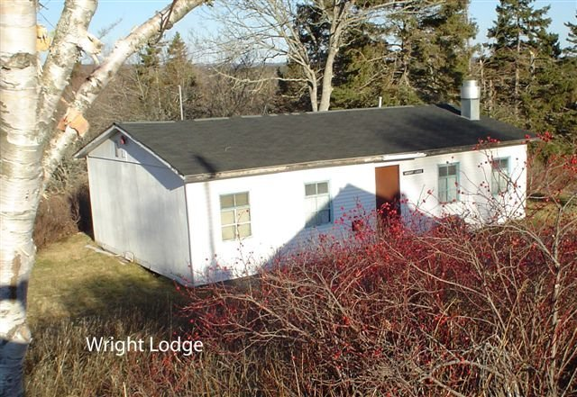
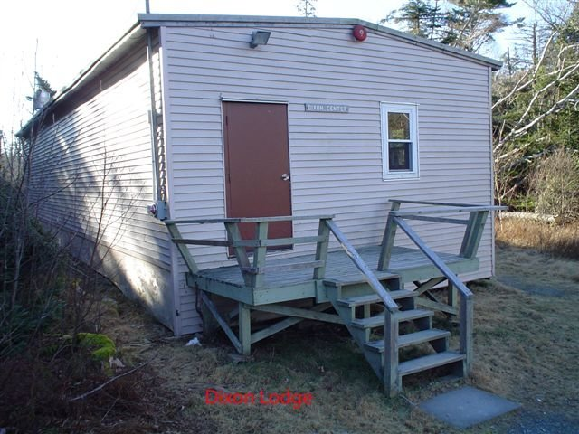
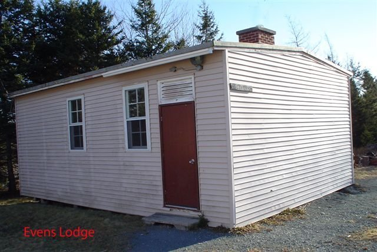
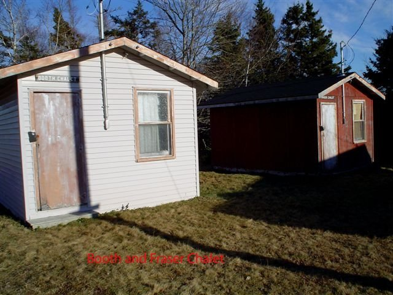
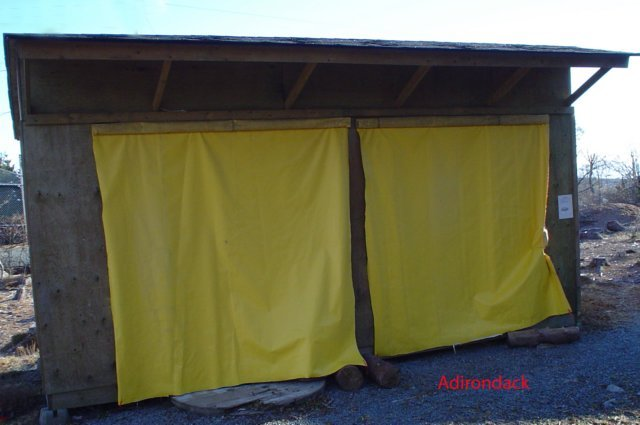

Camp Harris Facilities
A complete copy of the Camp Harris user guidlines is avaliable here (updated Nov 2016).
- Table of Contents
- Purpose of the Camp
- Description of Camp Facilities
- Outdoor Camping
- Water
- Permission to use Camp Harris
- Fees
- Crest
- Authority For and Observance of Guidelines
- Parking and Traffic Control
- Operating Guidelines
- Fires and Emergencies
- Washrooms, Lights-Out, Pets & Alterations
- Departure
- Feedback From Campers
- Contacting Duty Service Scouter
Camp Harris is operated by the Provincial Council through the Camp Harris Camp Committee to provide facilities for camping and scouting to members of the Scouting movement.
The Camp is available for use to community-based, non-profit organizations, and corporations providing they enter into a hold harmless agreement in accordance with Scouts Canada BPnP Section 13012; Indemnification and Hold Harmless Agreements, and provide proof of liability insurance, with each period of such use to be approved by the Camp Committee, based on its merits and the availability of Camp facilities.
Camp Harris is situated 8 kilometres from Cole Harbour (intersection of Cole Harbour and Forest Hills Drive) along the Lawrencetown Highway #207, turning inland for 1.2 kilometres along the Mineville Road to civic address #1250/1260. From Highway #107 take exit #18, drive for 4.4 kms to civic address #1250/1260. The Camp is a forested property on 40 acres of land, with only a few acres cleared to provide space for buildings and parking. There is limited walk-in access to a lake and a number of short trails.
The Camp is surrounded on all sides by private property (for example, the access road from the Mineville Road is owned by a neighbour; Scouts Canada only has a right-of-way). The untended telephone at the Camp is listed under Scouts Canada in the telephone book (902-434-2684). At any time the camp is in use there is a Duty Scouter on call. The Duty Scouter can be reached by calling 902-221-0284.
There are various facilities available for use by "campers" (this being the generic term used hereafter for persons using the Camp for any purpose).
In tents can be done at sites throughout the Camp property. Area events have accommodated up to twenty groups totalling 300 campers in tents on the grounds. Vault toilets are located near the outdoor camping areas.
- Campfire Circles are located off the Gray commons and near the Wright Lodge and Dixon Centre. They are available for groups using the Camp and for groups wishing to have ceremonial campfire.
- Chapel is located at the end of the trail off the Gray commons behind the campfire circle and is available to campers for Scouts Own ceremonies and other events appropriate to the use of a Camp chapel.
- Waterfront area is available for camper use, but is limited and unsupervised for swimming, but works well for watercraft use. There is no vehicle access to the waterfront area.
Note: Co-ed camping groups shall not be afforded separate buildings for each gender. Because there are separate washroom facilities available it is considered that these provide adequate privacy for women and girls to use when changing. To do otherwise would be to prevent maximum usage of Camp facilities.
All water on site is drawn from one of two wells that are registered with the Provincial Department of Environment. The well that supplies all the buildings has a trace of arsenic in it. The MacMillan, Wright and Dixon buildings are all fitted with an arsenic filter to provide suitable water for drinking and cooking.
Water in the wash rooms is unfiltered and only suitable for washing. There is an outside tap at the MacMillan building for use by groups camping out. This water is suitable for drinking and cooking. All water quality is tested quarterly by the QE II Health Sciences Centre Path Lab, with the results held by the Camp Committee. Occasionally the water to one of the buildings may freeze up during cold weather and water may have to be carried from another building.
A check with the Camp Registrar before going into Camp will determine the status of water in Camp.
- Permission may be granted by the Camp Registrar to any qualified leader in the Scouting movement. Because of the complexity of some of the fitted systems in the buildings camp users shall have one person who has taken the Camp Harris Orientation Course (offered twice a year) present throughout the period of using the Camp. This course is only valid for 5 years, and then it must be taken again due to changes and upgrades in the buildings.
- Because of the great demand for use of Camp facilities, the following procedures are used to regulate bookings. The Booking year for the camp is a 13 month period; September 1st of the current calendar year, to September 31st of the following calendar year.
- Dartmouth Area event bookings for the next Booking year shall be provided to the Camp Registrar no later than June 30th of the current calendar year and will be confirmed once received.
- All Groups or Organizations who are making a booking for ‘All Facilities’ can do so up to one full calendar year in advance of the date(s) they are booking. Confirmation will be provided, subject to availability.
- During the week prior to Labor Day, any Dartmouth Area Section or Group which has completed a minimum of 25 service hours to the camp may request one booking for facilities. Confirmation will be provided subject to availability.
- From Labor Day until Thanksgiving Monday in October, each Dartmouth Area Section or Group may request one booking for facilities. Confirmation will be provided subject to availability.
- After the Thanksgiving Monday in October, Dartmouth Area Sections or Groups may request additional bookings for facilities still available. Confirmation will be provided, subject to availability.
- A booking of any facility may be made by any Organization or Group outside of Dartmouth Area at any time. The booking will be tentative and confirmation of booking will occur following Thanksgiving Monday, subject to availability as per (e) above.
- All Groups, Sections, Area, or Organizations must provide the Camp Registrar with two weeks advance notice of any cancellation of a booking. Cancellation fees shall be determined by the Camp Harris Committee as identified in the ‘Notes’ section below.
Notes:
- Bookings are made by phoning the Camp Registrar at 902-462-2629. If the answering machine is on, leave your name and telephone numbers and booking information (and note that the booking is not confirmed until you talk to the Registrar in person).
- If a Group, Section, Area, or Organization cannot use a reservation as made, they are asked to call and cancel as quickly as possible, so as to free up the facility for others to use. If a booking is cancelled less than two weeks prior to date(s) booked then the Group, Section, Area, or Organization shall be liable for the cost of one night’s fee per facility booked. The Camp Committee reserves the right to wave this fee under special circumstances.
- Outdoor facilities must be booked.
- Groups, Sections, Area, or Organizations who have cancelled several bookings over a booking year period will be contacted by the Camp Committee and face a possible requirement to provide a deposit in connection with any future bookings of camp facilities.
To defray the costs of maintaining the Camp, a user fee is charged. The Registrar will advise you of the current fee structure for different groups and different facilities.
A Group that has developed a new campsite area, or has restored an existing campsite area, will be entitled to camp throughout the Scouting Year without paying the campsite fee. They would still be responsible for all other user fees.
A Camp crest is available from the Registrar to all who have slept overnight at least once at the Camp. The crest is multi-coloured, with a totem pole as the centre piece, and costs $2.50 per copy.
These guideline are issued under the authority of the Provincial Council by the Camp Harris Camp Committee, for the safety and benefit of all campers, and for conservation of the Camp. They apply to all persons using the Camp (ie, from individual camper visits, to Provincial, Area, Group, and Section activities). They are updated frequently.
- The Scout Law and the rules for camping in Scouts Canada BP&P shall guide all campers when using the Camp. In particular all registered youth must be supervised by at least one adult when on a camping visit to the Camp. The adult to youth ratios as per B.P. & P. must be met at all times.
- To prevent difficulties between groups when staying at the Camp, campers are requested to use only those areas specifically allocated for their use. When sharing facilities (eg, washrooms and campfire pits), cooperation is expected between groups. As per the Scout Law, all campers must respect and be considerate of the rights of campers from other groups.
- The Camp Committee is in charge of all aspects of the Camp property, and operates under the guidance of the Provincial Council. There are two positions on the Camp Committee for representatives from each of the former Districts / Zones that Dartmouth was divided into, at least one of whom shall be a program Scouter.
The Camp is looked after by volunteers from throughout Area on a two month rotational basis. The duties of the Area volunteers are as follows:
- Turn on the heat and water in the buildings as required by weather conditions (ie, in the late autumn and winter) prior to the arrival of campers
- Ensure stoves, fridges and hot water heaters are in good working order prior to the arrival of campers
- Ensure information is left for campers regarding these guidelines, and other restrictions laid down from time to time (ie, boil water order, fire ban, trail closures) by the Camp Committee
- Sign out and sign in to/from campers items of general Camp equipment which MAY be available (eg, tools, axes, shovels) on an exception basis. (Campers should normally bring everything that they might need)
- Check all buildings and facilities occupied by campers to ensure that they have been properly cleaned
- Turn down heat in the buildings and drain the water systems as required by cold weather
- Be available via the Camp cell phone to assist campers in distress (eg, reset master propane shut-off valves and relight propane systems)
- Advise the Camp Committee of any significant breeches of Camp Guidelines at the earliest convenient occasion
- Perform any minor maintenance (change light bulbs, etc.) within their capabilities. This includes keeping all lawns mowed and doors ways shoveled in season
All significant breeches of Camp Guidelines will result in action by the Camp Committee in consultation with the appropriate Provincial Commissioner to ensure that remedial action is taken.
The access road from the Mineville Road into the Camp is unsafe for speeds above 15 KPH.
In view of the limited road access to the buildings in the main area of the Camp in the event of an emergency, the Fire Marshall requires us to respect the need for "fire lanes" around all buildings. To that end:
- Vehicles must not obstruct the roadway at any time, particularly in front of the Dixon Centre
- Campers shall park their vehicles in the parking lots at all times, except for the limited period of time required to drop off or pick up gear
- When parking, campers are requested to make room for the maximum number of cars
- In view of both the treacherous road conditions and the need for snow removal on the marginal road between the Mineville Road and the Camp proper in the winter months, special parking restrictions may be in force at times (eg, no traffic past the parking lot at the top of the hill known as the Sagar Commons). In the winter there is absolutely no parking/stopping on the road outside the Dixon Centre. Campers are encouraged to check with the Camp Committee and/or Camp Registrar before an event to determine what parking restrictions are in effect, so that they can pass along the word to all leaders and parents driving out to the Camp. Campers must accept that they may need to transport food and equipment by toboggan down from the parking lot, for the safety of all
- If extraordinary traffic congestion is anticipated, campers should notify the Camp Committee in advance, as early as possible
Just as the Camp Committee has responsibilities to campers for the proper maintenance of the Camp, so to do campers have responsibilities when using the facilities, to other campers now and in the future.
Copies of the Guidelines: These Guidelines should be taken by campers to the Camp (copies are provided in each building in the Camp), read by all leaders attending Camp, briefed as appropriate to the youth, and abided by to the greatest extent possible.
Arrival at Camp: The following is important when arriving at the Camp:
- Campers should check the condition of the buildings they will be using on arrival, and report any anomalies to the volunteer Scouter on call for the weekend or the Camp Committee Chair as soon as practically possible.
- As soon as practical, Leaders should brief all youth on fire escape procedures, on the location of the camper's First Aid Kit, on Camp boundaries (marked by yellow signs on trees), on the location of key facilities to be used (and not to use other facilities not assigned for their use), on water for drinking, and on other matters of significance to the group itself.
- Once gear and food is dropped off, campers shall remove vehicles to the main parking lots.
- Camp Users are responsible for clearing snow from doorways, stairs, and ramps of the facilities they are using, and must ensure that these areas kept clear during their stay. Shovels are provided in each of the main buildings during winter camping season.
Hygiene: Campers shall take appropriate steps to maintain high standards of hygiene. In this regard, the following guidelines are important:
- Garbage shall be disposed of "off-site" by campers. By "off-site" is meant that it is removed to a location where there is regular garbage pick-up (eg, take it home). Under no circumstances is it to be left at the Mineville Road box (which belongs to and is paid for by the neighbor). For long term camps, garbage disposal should be done every two days; for short term camps, garbage is to be taken off-site when departing. Everything brought to the Camp by campers is to be removed by them.
- Washrooms are to be cleaned and re-supplied at least daily (or as may be required in exceptional circumstances) by those using the facilities, and before departing the Camp. Normally, those campers using Wright and/or Dixon use and clean the washrooms in Delaney, whereas campers in MacMillan and Evans use and clean the washrooms in MacMillan. Outdoor campers are to clean the vault toilets. Cleaning is to include sweeping and mopping the floor and cleaning all fixtures (ie, toilets, urinals, counters and sinks), as well as ensuring an adequate supply of toilet paper.
- Campers are required to bring to Camp all cleaning materials and paper goods (eg, toilet paper, dish soap, javex) that they will need to ensure a high standard of hygiene.
Kitchens/Cooking: As per Scouting routine and to ensure maximum safety, the following guidelines pertaining to kitchens and cooking should be observed by campers:
- The water supply is limited, as it comes from drilled wells. All water consumption should therefore be monitored to safeguard campers and prevent waste (ie, usage of basins in sinks rather than filling the sinks).
- Kitchen areas should be out-of-bounds to all campers except those preparing meals. Kitchens should not be used for program planning or activities.
- Propane stoves are for cooking purposes only. The range hood exhaust fans above the ranges MUST always be turned on when the ranges are in use. For safety reasons, the stoves should not be used to heat buildings or dry clothes.
- The propane stoves in the MacMillan, Dixon and Wright buildings are fitted with an automatic fire suppression system in the range hoods
- All kitchen equipment shall be cleaned immediately after use.
- The four tub method of washing dishes should be used (first tub, use rubber gloves in very hot water and dish soap; the second tub for hot water rinse; and the third tub, hot water and one cap of javex) followed by air drying. The fourth sink is for hand washing.
- Grease should be collected in tin cans or other containers and disposed of (once solidified) as garbage (not in the forest). Grease should never be poured down the sink drains or toilets as it upsets the balance of nature in the septic systems.
- A composter is available behind MacMillan, but it must strictly be used in accordance with appropriate composting guidelines.
Alcohol/Drugs: The use or possession of any form of unlawful drugs on camp property is forbidden. The use or possession of alcohol beverages is mandated by BPnP 1010(a)(b).
Firearms/Pyrotechnics: Guns, including pellet and BB guns, are not permitted at the Camp, nor are explosive devices such as rockets and fireworks.
Smoking: There should be no smoking in areas used by youth.
Trees: Live trees shall not be damaged or felled except for site clearing approved by the Camp Committee. Downed timber can be disposed of as firewood; stumps can be cut off at ground level for the same purpose.
The following procedures are to be followed:
- At any time that a building fire alarm system sounds, regardless of cause (eg, even if caused by burning food on the stove), the building should be evacuated immediately to an outdoor Muster Point location, as identified on the building evacuation plan, and a roll call taken. This is important to condition all youth to react the same way at all times.
- The fire department must be telephoned using the emergency number 911. The Civic Address of the Camp is 1250 Mineville Road.
- Once the possible fire problem has been confirmed and corrected then the fire alarm must be reset. There are written instructions inside the front cover of the fire alarm panel.
- The Duty Service Scouter must be informed whenever one of the building fire alarms are set off, using the cell phone number 902-221-0284.
- Outdoor fires shall be confined to the existing fire pits agreed to by the Camp Committee, and are to be left unattended only when they are "dead out". In the summer when there is a danger of forest fire, fires shall only be lit after checking with the Camp Committee, who will remain current with the fire hazard situation through contact with the appropriate local government authorities.
Medical Emergencies: Phone using the 911 number. First aid kits are the responsibility of campers, although a small one is maintained by the Camp Committee in the MacMillan kitchen.
Washrooms: Campers who have booked buildings are to use indoor washrooms. Campers who have booked outdoor sites are to use the vault toilets. Sanitary napkins and other hygiene products are not to be disposed of in the toilets.
Lights-Out: Lights-out time is 11:00 p.m. and noise after that hour is not permitted.
Pets: I.A.W. B.P.P. Section 13000 Risk Management, 13026 – Animals at Camp. Domestic animals are prohibited from being present at Scouts Canada activities and Camp facilities. The exceptions to this prohibition are “working animals” (such as Seeing Eye dogs) or animals attending for demonstration purposes, such as police Canine Unit members.
Alterations: Alterations to the Camp for any event should be approved by the Camp Committee beforehand, leaving sufficient time for the Committee to make the decision. If approved, the Camp is to be restored to its original condition before the campers depart, unless the Camp Committee has authorized otherwise.
Prior to departure, the following is required:
- All equipment is to be returned to its proper place (eg, borrowed tools, mops & buckets, tables & chairs, Camp Harris signs).
- All Camp alterations and woodcraft projects should be dismantled, and discarded twine collected for disposal off-site.
- Kitchen equipment is to be cleaned. This includes sinks, stoves, ovens and grills (grease free), and fridges (wiped down inside and out).
- Washrooms for which campers have responsibility are to be cleaned as per guidelines in subparagraph 17c (2) above.
- All floors are to be swept clean and mopped.
- Rooms are to be neat and tidy with chairs and tables stacked.
- All garbage is to be removed from buildings and grounds and disposed of "off-site".
- The last camp user to vacate the property is to ensure that the gate is locked.
The Camp Committee is interested in your feedback. You are requested to write your comments on the User Fee form. All constructive criticism is welcome. Where appropriate, campers are encouraged to contact members of the Camp Committee, including when at Camp, if problems arise.
Each weekend (or during the week) when a group of campers is in Camp a Duty Service Scouter is on call. If you have a problem that you cannot resolve then you are asked to contact the Duty Service Scouter by phone. The Duty Service Scouter should be reached by calling 902-221-0284 which is the Camp cell phone. If you are unable to contact the Duty Scouter at the cell phone number then call one of the other contact numbers that are listed by each phone in the Camp.
MacMillan Lodge
Is propane heated, and the central facility for Area events (but also available for Group/Section bookings). The building includes a complete kitchen (with running hot and cold water, a propane range with oven and grill, two fridges, a freezer and telephone), two small bedrooms for leaders (with one triple bunk bed each), a large hall, and washroom. This facility is wheel-chair accessible. Approximately 35 youth can sleep on the floor in the hall.
Delaney Lodge
Has split interior and purpose: one side is a bunk house suitable for “Leaders Only”. It is normally used to supplement bunk space for Leaders who have a group in the Wright Lodge or as a central point for a First Aid Station for large events.
It is heated electrically and can sleep four adults. It is also the office “working space” for the Camp Committee. It is equipped with telephone (internally and externally), sink with hot & cold water, and a refrigerator. The other side has a washroom with running cold water and heated with electric heat.
Wright Lodge
Is propane heated and fitted with fifteen bunks in a bedroom area. The building includes a limited kitchen (with running hot & cold water, a fridge and propane range with oven and grill), telephone and a small hall (which can also accommodate youth sleeping on the floor if required). This facility is wheel-chair accessible.
Dixon Center
Is also heated with propane. The building includes a limited kitchen (with running hot and cold water, a fridge and a propane range with oven and grill), telephone, small bedroom for leaders (with one triple bunk bed), and a large hall. Approximately 35 youth can sleep on the floor of the hall. This building is also wheel-chair accessible.
Evans Lodge
Is propane heated as well. The building includes two small bedrooms with bunk beds, a kitchen area with a fridge and propane stove, and an open area with couches and chairs. There is no running water. It is appropriate for use by groups of eight or fewer. The fireplace in the building has an electric fireplace insert for the look of a fire. The fireplace is unsafe for a real fire.
Booth and Fraser Chalets
Are two small cabins with electricity but no heat, fit for summer use only and fitted with two built-in bunks each. These buildings are for Leaders use only.
Adirondacks
Are six open-on-one-side (to the weather), unheated shelters with built in bunks, suitable for use in warm weather. Five of the Ads have 12 bunks, the sixth has eight bunks. All of the Ads are wheelchair accessible using a portable ramp.
